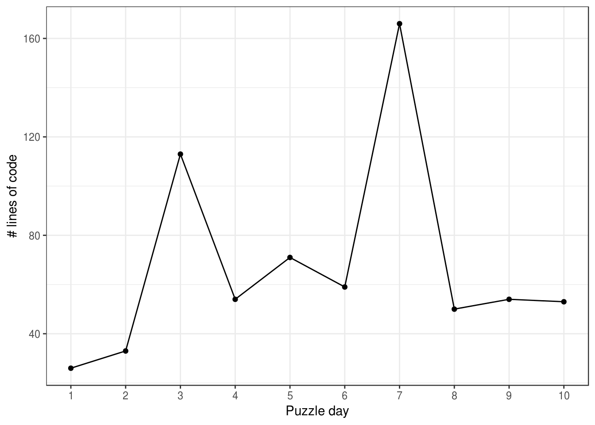
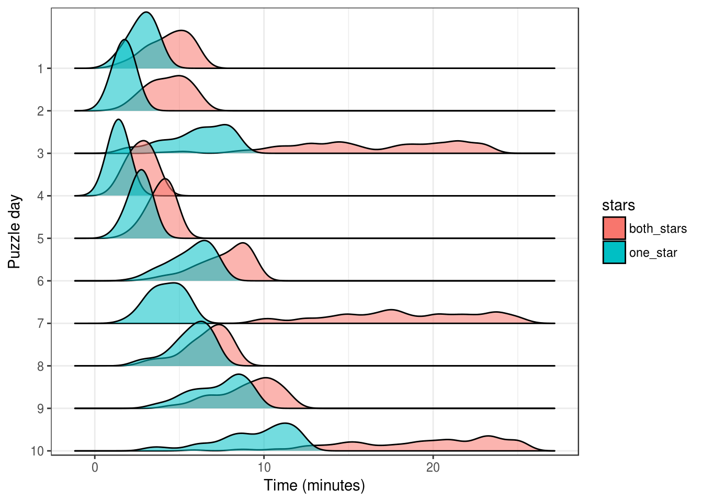
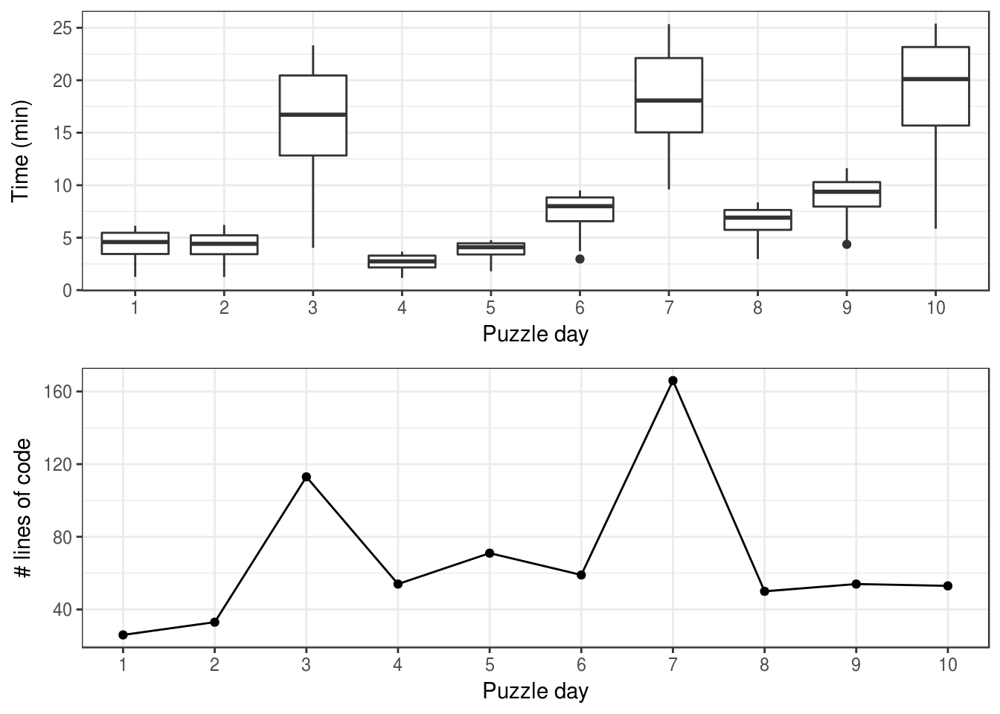

Some data exploration
I was curious about whether the relative difficulty of the puzzles was uniform across users. In other words, are difficult puzzles difficult for everyone?
Specifically, I was cared about my own experience: puzzle #3, for example, was fun but also maddening! To investigate this question, I used the length of my raw code as a proxy for difficulty:
library(tidyverse)
library(R.utils)
file_stats <- tibble(file_name = list.files("raw", pattern = ".R")) %>%
mutate(puzzle_no = 1:10) %>%
rowwise() %>%
mutate(n_lines = countLines(paste0("raw/", file_name))[1])
print(file_stats)## Source: local data frame [10 x 3]
## Groups: <by row>
##
## # A tibble: 10 x 3
## file_name puzzle_no n_lines
## <chr> <int> <int>
## 1 01_long_number_doubles.R 1 26
## 2 02_checksum.R 2 33
## 3 03_number_swirl.R 3 113
## 4 04_valid_passcode.R 4 54
## 5 05_escape.R 5 71
## 6 06_memory_banks.R 6 59
## 7 07_discs_towers.R 7 166
## 8 08_instructions.R 8 50
## 9 09_garbage.R 9 54
## 10 10_codes.R 10 53Here’s a quick look at what that looks like:
irene_plot <- file_stats %>%
ggplot(aes(x = puzzle_no, y = n_lines)) +
geom_line() +
geom_point() +
scale_x_continuous(breaks = 1:10,
minor_breaks = NULL) +
xlab("Puzzle day") + ylab("# lines of code") +
theme_bw()
print(irene_plot)
From this, it appears that puzzles on day 1 and 2 were super simple, and days 3 and 7 were the toughies. Note: day 10 is only half finished, and it wasn’t because it was too easy…
Now let’s take a look at the Advent of Code leaderboard. This lists the first 100 people to get both stars (solve both halves of the puzzle) and the first 100 people to get the first star. These are the super speedsters, who apparently can whiz through these puzzles in minutes! We’ll use the RCurl package to help us grab the info:
library(RCurl)
get_aoc_stats <- function(day) {
#grab source code from leaderboard page for day specified
url <- paste0("https://adventofcode.com/2017/leaderboard/day/", day)
leaderboard <- getURL(url)
#extract times
times <- str_extract_all(leaderboard,
pattern = "\\d\\d:\\d\\d:\\d\\d")[[1]]
#includes both first 100 to get both stars and first 100 to get 1st star
#return data frame with day, time to get both stars, and time to get one star
data.frame(day = day,
both_stars = times[1:100],
one_star = times[101:200])
}
#apply this function to get Advent of Code leaderboard stats for days 1-10
aoc_stats <- lapply(1:10, get_aoc_stats)
#combine list of data frames into one giant data frame.
aoc_stats_combined <- do.call(rbind, aoc_stats)
print(head(aoc_stats_combined))## day both_stars one_star
## 1 1 00:01:16 00:00:57
## 2 1 00:01:35 00:01:08
## 3 1 00:01:37 00:01:12
## 4 1 00:01:45 00:01:16
## 5 1 00:02:03 00:01:18
## 6 1 00:02:11 00:01:26We can tidy up our data a bit using tidyr, dplyr, and lubridate, and then plot it using ggplot/ggridges.
library(lubridate)
library(ggridges)
aoc_stats_tidy <- aoc_stats_combined %>%
as.tibble() %>%
#change both_stars and one_star from factor to character to combine
mutate(both_stars = as.character(both_stars),
one_star = as.character(one_star)) %>%
gather(key = stars, value = time, -day) %>%
#prep time for graphing...
mutate(time = hms(time),
time_min = as.numeric(time)/60,
day = as.factor(day))
ggplot(aoc_stats_tidy) +
geom_density_ridges(aes(y = fct_rev(day), x = time_min,
fill = stars, alpha = .9)) +
theme_bw() +
ylab("Puzzle day") + xlab("Time (minutes)") +
scale_y_discrete(expand = c(0.01, 0)) +
guides(alpha = FALSE)
According to these times, the whiz coders also found puzzles 3, 7, and 10 to be difficult. We can use the more traditional box-plot to make the comparison with my lines of code more directly.
library(cowplot)
aoc_plot <- aoc_stats_tidy %>%
filter(stars == "both_stars") %>%
ggplot() +
geom_boxplot(aes(x = day, y = time_min)) +
xlab("Puzzle day") + ylab("Time (min)") +
theme_bw()
plot_grid(aoc_plot, irene_plot, ncol = 1, align = "v")
And there you have it! How quickly the whizzes solved difficult puzzles was extremely variable, but on average, the time it took them matched the number of lines of code I wrote.
All puzzles are equal, but some puzzles are more equal than others.